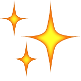

Finally, a web app framework that’s both  and .
Bridge is a full stack modular web framework for Dart, with clarity and agility in mind.
Bridge is a full stack modular web framework for Dart, with clarity and agility in mind.
Interact with your running application live, from the command line shell instance.

Templates and API that’s made for the modern web. Automagic pre-compilation for blazing speed.
Connected with WebSockets through the Tether. It’s what we wished XHR would be like.
Are you ready to try Bridge out? All you need to have installed is Dart and a code editor.